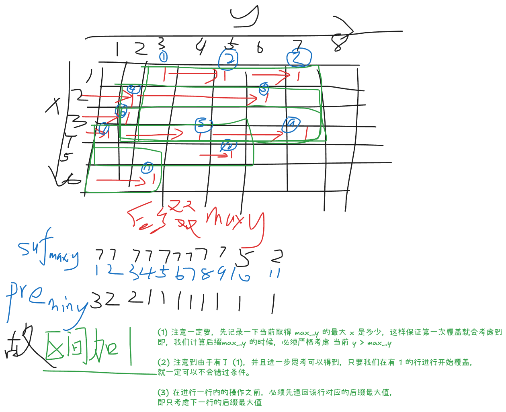

2026牛客暑期多校训练营3
A 比特掩码【段计数 / 位运算】
Problem Description
对于非负整数 ，定义 为 的二进制表示（不含前导零）中极长连续全 段的个数。例如，，因为 ，其二进制表示包含 个极长连续全 段。
给定 个整数 。你需要处理 个操作。每个操作由两个整数 和 描述。
- 若 ，将每个 替换为 。
- 若 ，将每个 替换为 。
- 若 ，将每个 替换为 。
其中 表示按位与运算， 表示按位或运算， 表示按位异或运算。
每个操作之后，输出
Input
每个测试文件仅包含一组测试数据。
第一行包含一个整数 。
第二行包含 个整数 。
第三行包含一个整数 。
接下来 行，每行包含两个整数 和 ，描述一个操作。
Output
输出 行。第 行必须包含第 个操作之后
的值。
Sample Input
4
3 5 6 10
4
1 7
2 8
3 15
2 3Sample Output
5
7
5
4Solution
这不就是利用的 2026“钉耙编程”中国大学生算法设计暑期联赛（1） 1006 开关灯的结论吗
计算 01 串连续的 1 段数量的公式
在本题中， 不可能一个个去枚举，必然需要使用到按位更新，因此维护的是：
- 第 位置上面 的数量
- 第 位置同时为 的数量
针对不同操作维护这个信息（从高位向低位遍历更新）
- 对于
&- 只看 ：清空 位置的 ， 位置的
- 对于
|- 只看 1： 位置的 填满， 位置的 等于 位置的 ， 位置的 等于 位置的
- 对于
^- 位置的 相对于 取反
- 位置的 相对于 位置的 取反
- 位置的 相对于 位置的 取反
Code
#include<bits/stdc++.h>
using namespace std;
const int N = 3e5 + 5, B = 30;
int n, a[N], m;
int cnt[B+1][3];
void solve() {
cin >> n;
memset(cnt,0,sizeof cnt);
for (int i = 1; i <= n;i ++) {
cin >> a[i];
for (int j = 0;j<B;j++) {
cnt[j][1]+=((a[i]>>j&1) == 1);
cnt[j][2]+=((a[i]>>j&3) == 3);
}
}
cin >> m;
for (int i = 1; i <= m;i ++) {
int type, x;
cin >> type >> x;
if (type == 1) {
for(int i = B-1; i >= 0;i--) {
if ((x >> i & 1) == 0) {
if (i > 0) cnt[i-1][2] = 0;
cnt[i][1] = 0;
cnt[i][2] = 0;
}
}
} else if (type == 2) {
for (int i = B-1; i >= 0; i--) {
if ((x >> i & 1) == 1) {
if (i > 0) cnt[i-1][2] = cnt[i-1][1];
cnt[i][1] = n;
cnt[i][2] = cnt[i+1][1];
}
}
} else {
for (int i = B-1; i >= 0;i--) {
if ((x >> i & 1) == 1) {
if (i > 0) cnt[i-1][2] = cnt[i-1][1] - cnt[i-1][2];
cnt[i][1] = n - cnt[i][1];
cnt[i][2] = cnt[i+1][1] - cnt[i][2];
}
}
}
int ans = 0;
for (int i = 0; i < B;i++) ans += cnt[i][1] - cnt[i][2];
cout << ans << "\n";
}
}
int main() {
ios::sync_with_stdio(0); cin.tie(0); cout.tie(0);
int T = 1;
// cin >> T;
while (T--) solve();
}B 再买一瓶【Raney 引理】
Problem Description
一瓶饮料售价 元。
每次小明喝完一瓶饮料，他会以 的概率获奖。如果获奖，他将得到 元；否则，他什么也得不到。
他得到的钱可以用来购买更多饮料。每瓶饮料的获奖事件相互独立。
小明一开始有 元。求他恰好喝完 瓶饮料后花光所有钱的概率。
Input
每个测试文件包含多组测试数据。第一行包含测试数据的组数 ()。
接下来 行，每行包含五个整数 (，)，表示小明一开始有 元，每次获奖得到 元，获奖概率为 ；你需要求出他恰好喝完 瓶饮料的概率。
Output
输出 行，每行包含一个整数：对应测试数据的答案对 取模的结果。
形式化地，设 。可以证明，答案可以表示为最简分数 ，其中 和 为整数且 。输出等于 的整数。
Sample Input
4
1 1 2 1 2
1 3 2 1 2
2 2 3 1 3
1 2 2 1 2Sample Output
499122177
873463809
776412275
0Hint
在第一组测试数据中，恰好喝完 瓶的唯一方式是第一瓶没有获奖，其概率为 。
在第二组测试数据中，恰好喝完 瓶的唯一方式是第一瓶获奖且接下来两瓶都没有获奖，其概率为 。
在第四组测试数据中，小明一开始有 元，每次获奖得到 元，因此他不可能恰好喝完 瓶。
Solution
Raney 引理：投票问题的结论，从 到 ，最大上升步长 ，符合 前缀约束 的序列数量的结论
Raney 引理：若整数序列每一项不超过 （） ，总和为正整数 （） ，则它的 （） 个循环移位中恰有 个移位的所有非空前缀和为正。

Code
#include<bits/stdc++.h>
using namespace std;
const int N = 2e6 + 5, mod = 998244353;
int n, m, c, a, b;
int fac[N], invfac[N];
int ksm(int a, int b = mod - 2) {
int res = 1;
for (; b; b >>= 1, a = 1LL * a * a % mod) if (b & 1) res = 1LL * res * a % mod;
return res;
}
void init() {
fac[0] = 1;
for (int i = 1; i < N; i++) fac[i] = 1LL * fac[i - 1] * i % mod;
invfac[N - 1] = ksm(fac[N - 1]);
for (int i = N - 1; i >= 1; i--) invfac[i - 1] = 1LL * invfac[i] * i % mod;
}
int C(int i, int j) {
if (i < j) return 0;
return 1LL * fac[i] * invfac[j] % mod * invfac[i - j] % mod;
}
void solve() {
cin >> n >> m >> c >> a >> b;
if (m - n < 0 || (m - n) % c) {
cout << 0 << "\n";
return;
}
int k = (m - n) / c;
int p = 1LL * a * ksm(b) % mod;
int q = (1 - p + mod) % mod;
cout << 1LL * n * ksm(m) % mod * C(m, k) % mod * ksm(p, k) % mod * ksm(q, m - k) % mod << "\n";
}
int main() {
init();
ios::sync_with_stdio(0); cin.tie(0); cout.tie(0);
int T = 1;
cin >> T;
while (T--) solve();
}G 矩阵标记【单调栈】
Problem Description
给定一个 的数字网格，每个格子中包含一个正整数。
如果存在两个格子 和 满足 且 ，且这两个格子中的数字相等，那么所有满足 且 的格子 都会被标记。
输出整个网格最终的标记情况。
Input
每个测试文件仅包含一组测试数据。
第一行包含两个整数 (，)。
接下来 行，每行包含 个整数；其中第 行包含 ()，描述该数字网格。
Output
输出 行，每行包含一个长度为 、由字符 0 和 1 组成的字符串。
第 行的第 个字符为 1 表示格子 最终被标记，为 0 表示未被标记。
Sample Input
2 6
1 2 3 4 5 6
7 8 9 3 4 10Sample Output
001110
001110Hint
在样例中，第 1 行第 3 列的格子和第 2 行第 4 列的格子都含有数字 3，因此它们标记了两行中第 3 列到第 4 列的所有格子。
第 1 行第 4 列的格子和第 2 行第 5 列的格子都含有数字 4，因此它们标记了两行中第 4 列到第 5 列的所有格子。两个矩形的并集即为最终答案。
Solution
与取值个数相关的网格问题：链表式存储NB！

Code
#include<bits/stdc++.h>
using namespace std;
using LL = long long;
const int N = 1e6 +5;
int n, m;
vector<vector<int>> a;
vector<vector<LL>> mat;
struct Node {
int mny, mxy, sufx, sufy;
};
// 这里代表的是数字 x 在 第 i 行的 最大/小 y 值
map<int, Node> Y[N];
void add(int a,int b,int c,int d) {
// 【特别注意】由于是沿着 x 方向扫的，所以允许一行，但不允许一列
if(a>c||b>=d) return;
// cout << a << " " << b << " " << c << " " << d << "\n";
mat[a][b]++;
mat[c+1][b]--;
mat[a][d+1]--;
mat[c+1][d+1]++;
}
void solve() {
cin >> n >> m;
mat.assign(n+1, vector<LL>(m+1));
a.assign(n+1, vector<int>(m+1));
for (int i = 0; i < n; i++) {
for (int j = 0; j < m;j ++) {
cin >> a[i][j];
if (!Y[a[i][j]].count(i)) {
Y[a[i][j]][i] = {j, j, i, j};
} else {
Y[a[i][j]][i].mxy = j;
Y[a[i][j]][i].sufy = j;
}
}
}
int tot = n * m;
for (int i = 1; i <= tot; i++) {
int sufx = -1;
int sufy = -1;
for(auto it = Y[i].rbegin(); it!=Y[i].rend();it++) {
int tmpx = it->second.sufx;
int tmpy = it->second.sufy;
it->second.sufx = sufx;
it->second.sufy = sufy;
if(tmpy > sufy) {
sufx = tmpx;
sufy = tmpy;
}
}
int mny = 1e9;
for(auto it = Y[i].begin(); it!=Y[i].end();it++) {
if(it->second.mny < mny) {
mny = it->second.mny;
}
it->second.mny = mny;
}
}
for(int i = 1; i <= tot; i++) {
for(auto [row, node]: Y[i]) {
auto [mny, mxy, sufx, sufy] = node;
add(row, mny, sufx, sufy);
}
}
for (int i = 0; i < n; i++) {
for (int j = 0; j < m ;j++) {
mat[i+1][j] += mat[i][j];
mat[i][j+1] += mat[i][j];
mat[i+1][j+1] -= mat[i][j];
cout << (mat[i][j] > 0);
}
cout << "\n";
}
}
int main() {
ios::sync_with_stdio(0);
cin.tie(0); cout.tie(0);
int T = 1;
// cin >> T;
while (T--) solve();
}I 交换大师【DP / 拆绝对值】
Problem Description
对于一个数组 ，定义其价值为 。
你可以选择两个不同的位置并交换这两个位置上的元素，该操作最多执行一次。你也可以选择不改变数组。
求数组可能的最大价值。
Input
每个测试文件包含多组测试数据。第一行包含测试数据的组数 ()。每组测试数据的格式如下。
每组测试数据的第一行包含一个整数 ()。
第二行包含 个整数 ()。
保证同一测试文件中所有测试数据的 之和不超过 。
Output
对于每组测试数据，输出一个整数：最多进行一次交换后数组可能的最大价值。
Sample Input
3
5
1 3 2 7 4
4
5 5 5 5
6
10 1 10 1 10 1Sample Output
14
0
45Hint
在第一组测试数据中，一种最优选择是交换 和 。数组变为 ，其价值为 。
Solution
Solution
端点 / 相邻暴力，内部交换枚举绝对值符号
人话：贡献倍率有限，暴力枚举，相互照顾
一次交换只影响局部。先把所有含端点的交换和相邻交换暴力掉，用交换前后的局部贡献差更新 ans。
剩下只考虑两个内部位置的交换。
对内部位置 ，设
若换入值 ，局部增量为：
两个绝对值各取正负号，共 4 个状态。设状态 对应符号 ，则：
其中：
若 交换， 选状态 ， 选状态 ：
重排：
精髓在这里：单独看 时依赖未知的 ；但固定对方斜率 后， 这一半只依赖已知的 和状态 ，可以前缀最大。
维护：
表示已经处理过的位置 ，自己选状态 ，未来对方选状态 时的最大左半贡献。
扫到当前位置 ，枚举上一个状态 、当前状态 ，算：
用：
更新答案。
然后把当前位置作为未来的左侧位置：
相邻内部对即使被扫到，也会少算中间边，不会超过已经暴力过的真实相邻增量。
最后答案是原始价值加上最大增量：
注意 sum 和中间量开 long long。复杂度 。
Code
#include<bits/stdc++.h>
using namespace std;
using LL = long long;
const int N = 5e5 + 5;
int n;
LL a[N], sum, ans;
LL f[4][4]; // 考虑 cost_i(x) = |x - a_{i - 1}| + |x - a_{i + 1}| 中 绝对值的符号取值
// 0 -> k = --
// 1 -> k = -+
// 2 -> k = +-
// 3 -> k = ++
int sign[2] = {1, -1};
LL cal(int i) {
return i == 1 ? abs(a[1] - a[2]) : i == n ? abs(a[n] - a[n-1]) : (abs(a[i]-a[i-1]) + abs(a[i]-a[i+1]));
}
void test(int l, int r) {
LL d1 = cal(l) + cal(r);
swap(a[l], a[r]);
LL d2 = cal(l) + cal(r);
swap(a[l], a[r]);
ans = max(ans, d2 - d1);
}
void solve() {
sum = ans = 0;
cin >> n;
for (int i = 1; i <= n; i++) cin >> a[i];
for (int i = 2; i <= n; i++) sum += abs(a[i] - a[i - 1]);
for (int i = 1; i < n; i++) {
test(1, 1 + i);
test(n - i, n);
test(i, i + 1);
}
memset(f,0xc0,sizeof f);
for (int i = 2; i < n; i++) {
for (int s = 0; s < 4; s++) { // 上一个是 s
for (int t = 0; t < 4; t++) { // 我是 t
// 要用对方 s 的 k
LL k = sign[s&1] + sign[s/2], b = -sign[t&1] * a[i-1] - sign[t/2] * a[i+1] - cal(i);
LL Y = k * a[i] + b;
ans = max(ans, f[s][t] + Y);
// 为下一个 s 布置，对偶补充
f[t][s] = max(f[t][s], Y);
}
}
}
cout << (sum + ans) << "\n";
}
int main() {
ios::sync_with_stdio(0); cin.tie(0); cout.tie(0);
int T = 1;
cin >> T;
while (T--) solve();
}M 漫游者【树上随机游走】
Problem Description
M. 漫游者
有一棵 个顶点的树。一个漫游者从顶点 出发，想要到达顶点 。漫游者希望尽可能避免走回头路，但他的记忆力很差，只能记住上一步。
如果 ，旅程立即结束，步数为 。
否则，漫游者按以下规则移动：
- 第一步，他从 的相邻顶点中等概率随机选择一个并移动过去。
- 在之后的每一步中，假设他当前位于顶点 ，上一步所在的顶点为 。如果 ，他从 的相邻顶点中除 之外的顶点中等概率随机选择一个并移动过去。如果 ，那么 是 唯一的相邻顶点，因此他必须回到 。
- 漫游者一到达顶点 ，旅程即结束。
求旅程步数的期望，对 取模。
Input
每个测试文件包含多组测试数据。第一行包含一个整数 （）。每组测试数据的格式如下：
第一行包含三个整数 （，）。
第二行包含 个整数 （）。对每个 ，顶点 和 之间有一条边。保证给定的边构成一棵树。
保证同一测试文件中所有测试数据的 之和不超过 。
Output
对于每组测试数据，输出一个整数：步数期望对 取模的结果。
形式化地，设 。可以证明，答案可以表示为最简分数 ，其中 和 为整数且 。输出等于 的整数。
Sample Input
4
4 2 4
1 2 3
3 2 1
1 2
3 3 1
1 2
4 1 2
1 1 1Sample Output
3
2
2
665496239Hint
对于第一个样例，边为 、、。漫游者从顶点 出发，想要到达顶点 。第一步，他以各 的概率选择顶点 或顶点 。如果他移动到顶点 ，则下一步必须是顶点 ，因此旅程为 步；如果他移动到顶点 ，则他必须回到顶点 ，再到顶点 ，最后到顶点 ，因此旅程为 步。因此，步数期望为 。
Solution
树上随机游走-变体 公式化简可能需要惊人的注意力
- 一看像树上随机游走，只是游走的时候，被上一步限制了
- 根据常识，这个题目满足线性关系
- 所以大胆猜想，各个未知数依然可以相互线性表示出
- 即 使用树上随机游走的套路解题
- 此题作为树上随机游走的一道例题，揭示了一种可能的推式子方法：
- 集团的替换与分解，实现消元
- 考虑游走特性
- 游走决策与上个点有关，初步设计为关于有向边的转移
- 考虑到树上的边，可以存放在其儿子节点上，故基于儿子节点创建变量
- 最终的答案是基于 为根的树，所以
- 以 为根，建立有根树，建立到 的期望的 DP
- 对于一个节点 及其父边，
- 要么移动方向向下，来到 ： 表示当前 到 的期望
- 要么移动方向向上，来到 ： 表示当前 到 的期望
- 假设线性关系：
- 自底向上分析
- 设
- 叶子：
- ：只能向上移动，变为从 到 之后的期望
- 即
- ：同上
- ：只能向上移动，变为从 到 之后的期望
- 非叶子：
- ：只能向下
- 为了方便凑出来方程，这里使用
- ：可以向上，向下少一个
- ：只能向下
设 （tips：将整体替换，以后便于消元）
有
- 问题来了
- 我们想得到 的关系（需要通过比较系数得到对应的 递推式），怎么得到？
- 首先可以将 转化为 之后，消去
- 然后只剩下陌生的 和 了
- 注意到 中只存在 即
- 显然通过 这个跳板，我们可以带入消掉
- 将 表示为 的函数
- 将 中的 用上式代入
- 得到只含有 的函数，无
- 化简出 并回代到 式子中去即可
步骤如下
接下来的化简看着头疼，所以换元：
所以
代入到
比较系数，可得：
- 至此，问题解决了一半
- 可以自底向上求系数了
- 但是缺少之后自顶向下的 递推式
- 主要是求解 递推式，因为 可以通过 得到
显然，只需将最初的公式中， 直接消掉即可
- ok，最后就剩下 处的求解了
- 当 时，显然答案为
- 否则，先进行
dfs1- 目的是自底向上，收集 系数
- 然后遍历 的儿子，分别从儿子处开始
dfs2- 目的是计算
- 为什么不从 开始？
- 因为 没有父亲，其 定义非法
- 而其儿子 的 必定初始化为
- 因此系数从 儿子处向下传递
- 的计算方式
- 由是刚开始，没有限制，所以需要特殊计算，即
- 首先有 的初始值
- 接下来是按照度数均分的贡献
- 向上移动，那么
+=g[s] - 向下移动到 ，那么
+=f[v]
- 由是刚开始，没有限制，所以需要特殊计算，即
完结撒花
Code
#include<bits/stdc++.h>
using namespace std;
using ll = long long;
const int N = 5e5 + 5;
const ll mod = 998244353;
ll ksm(ll a, ll b = mod - 2) {
ll res = 1;
for (;b;b>>=1,a=a*a%mod) if(b&1) res = res * a % mod;
return res;
}
int n, s, t;
int P[N];
vector<int> e[N];
ll a[N], b[N], f[N], g[N], m[N];
void dfs1(int u, int fa) {
P[u] = fa;
m[u] = e[u].size() - (fa!=0);
if (e[u].size() == 1 && fa) {
a[u] = b[u] = 1;
return;
}
ll A = 0, B = 0;
for (auto v: e[u]) if(v!=fa){
dfs1(v, u);
ll tmp = ksm(m[u] + a[v]);
(A += a[v] * tmp) %= mod;
(B += a[v] * (m[u] - b[v] + mod) % mod * tmp % mod + b[v]) %= mod;
}
ll tmp = ksm(m[u] * (1 - A + mod) % mod);
a[u] = A * tmp % mod;
b[u] = (B * tmp + 1) % mod;
}
void dfs2(int u, int fa) {
f[u] = (a[u] * g[u] + b[u]) % mod;
for (auto v: e[u]) if(v!=fa){
ll tmp = ksm(m[u] + a[v]);
ll c = (1 + m[u] * a[u]) % mod * tmp % mod;
ll d = ((m[u] * b[u] - b[v]) % mod + mod) % mod * tmp % mod;
g[v] = (c * g[u] + d) % mod;
dfs2(v, u);
}
}
void solve() {
cin >> n >> s >> t;
for (int i = 1; i <= n; i++) e[i].clear();
for (int i = 2, p; i <= n; i++) {
cin >> p;
e[p].push_back(i);
e[i].push_back(p);
}
dfs1(t, 0);
f[t] = 0;
for (auto v:e[t]) {
g[v] = 0;
dfs2(v, t);
}
if (s == t) {
cout << "0\n";
} else {
ll res = 0;
for (auto v:e[s]) {
if (v == P[s]) {
(res += g[s]) %= mod;
} else {
(res += f[v]) %= mod;
}
}
res = (res * ksm(m[s]+1) + 1) % mod;
cout << res << "\n";
}
}
int main() {
ios::sync_with_stdio(0); cin.tie(0); cout.tie(0);
int T = 1;
cin >> T;
while (T--) solve();
}